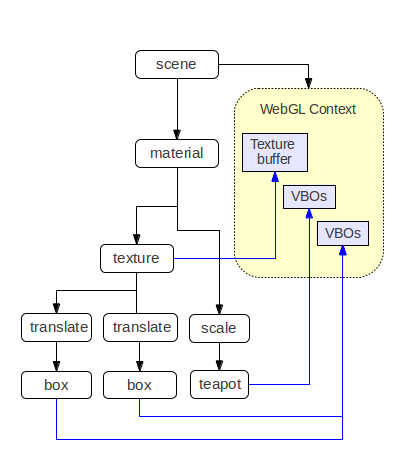
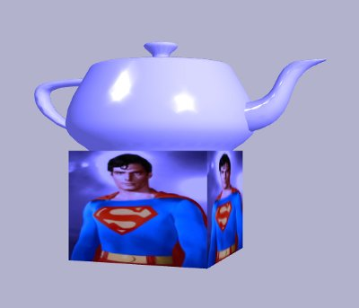

- Scene Graph
- Optimised Draw List
- Shader Generation
- Lost WebGL Recovery
- Scene Optimisation
- Custom Scene Node Types
1. What's a Scene Graph?
A scene graph is a data structure that arranges the logical and spatial representation of a graphical scene as a collection of nodes in a graph, typically a tree. Scene graphs typically provide a convenient abstraction on top of low-level graphics APIs (such as WebGL) that encapsulates optimisations and API best practices, leaving the developer free to concentrate on scene content.
A key feature of most scene graphs is state inheritance in which child nodes inherit the states set up by parents (e.g. coordinate spaces, appearance attributes etc).
For SceneJS, a benefit of this kind structure is modularity, where JSON subtrees can be complete reusable components.
2. Optimised Draw List
When aiming at high performance 3D graphics in the browser, the greatest performance bottleneck is JavaScript execution overhead.
SceneJS efficiently bridges the gap between its user-friendly scene graph representation and WebGL usage through a three step pipeline:
- Scene definition - a JSON definition like that of Listing 1 is parsed to create a scene graph like Figure 2, with resources such as vertex buffer objects (VBOs) and textures stored for its nodes on the GPU. Note the geometry nodes at the leaves.
- Draw list compilation - the scene graph is then compiled into an optimised sequence of WebGL calls, in which the calls are sorted so that the state changes they make on WebGL will be closer to the most efficient sequence for rendering the frame.
- The draw list is executed to render the frame.
SceneJS retains the draw list for fast redraw. Then whenever an update is made to the scene graph, SceneJS will recompile only the affected portion of the draw list from the modified nodes or branches. In many cases (such as changing a color or a rotation angle) this is trivial and instantaneous, where the display nodes and scene nodes share values by reference. In the worst case, such as for a scene restructuring, SceneJS must re-traverse the scene graph to regenerate nodes in the draw list, however in most cases this is just a limited branch re-traversal to regenerate a limited portion of the draw list.
3. Shader Generation
4. Lost WebGL Context Recovery
The GPU is a shared resource, and there are times when it might be taken away from our WebGL applications, such as when there are too many applications holding them, or when another application does something that ties up the GPU too long (perhaps even a DOS attack via shader, perish the thought). In such cases the operating system or browser may decide to reset the GPU to regain control.
When this happens, our WebGL apps will need to reallocate their textures, VBOs, shaders etc. on a new context afterwards.
SceneJS takes care of that recovery transparently, without disruption to code at higher layers. When WebGL restores the context again, SceneJS automatically reallocates the shaders and buffers from data it retains in its scene graph, without needing to reload anything off the server, and without loss of any scene state.
It's surprising how quick that recovery is - SceneJS was benchmarked at around 5-7 seconds to recover a scene containing approximately 2000 meshes and 100 textures.
[ Demo ]
5. Scene Optimisation
The SceneJS API supports several scene definition techniques that improve scene performance by exploiting the draw list state sorting order described above.
5.1. Texture Atlases
A texture atlas is a large image that contains many sub-images, each of which is used as a texture for a different geometry, or different parts of the same geometry. The sub-textures are applied by mapping the geometries’ texture coordinates to different regions of the atlas. SceneJS sorts its draw list by shader, then by texture. So long as each of the geometry nodes inherit the same configuration of parent node states, and can therefore share the same shader, the draw list will bind the texture once for all the geometries. Another important benefit of texture atlases is that they reduce the number of HTTP requests for texture images.
[ Demo ]
5.2. VBO Sharing
VBO sharing is a technique in which a parent geometry node defines vertices (consisting of position, normal and UV arrays) that are inherited by child geometry nodes, which supply their own index arrays pointing into different portions of the vertices. The parent VBOs are then bound once across the draw calls for all the children. Each child is a separate object, which as shown in Figure SceneJS:vboSharingListing, each child geometry can be wrapped by different texture or materials etc.
[ Demo ]
5.3. Shareable Node Cores
Traditionally, re-use within a scene graph is done by attaching nodes to multiple parents. For dynamically updated scenes this can have a performance impact when the engine must traverse multiple parent paths in the scene graph, so SceneJS takes an alternative approach with ”node cores”, a concept borrowed from OpenSG. A node core is the node’s state. Having multiple nodes share a core means that they share the same state. This can have two performance benefits:- An update to shared node can write through to multiple draw and call list nodes simultaneously.
- There is increased chance of identical repeated states having matching IDs when executing the call list, which as described in Section 0.2.2, tracks the state IDs to avoid redundantly reapplying them. Listing 5 shows an example of node core sharing through the scene definition API.
[ Demo ]
6. Custom Scene Node Types
New node types can be provided as plugins. This allows us to define our own high-level (perhaps even domain-specific) scene components that just slot straight into the scene graph as nodes which you create and update as usual via the JSON API.
Custom nodes are effectively actors, which may create and manage subtrees of child nodes beneath themselves, including other custom node types.
SceneJS comes with a growing library of various custom node types, such as cameras, geometric primitives, special effects, buildings, vehicles, and so on.
var scene = SceneJS.createScene({
nodes: [{
type: "material",
color: {
r: 0.5,
g: 0.5,
b: 1.0
},
nodes: [{
type: "texture",
layers: [{
src: "../../textures/superman.jpg"
}],
nodes: [{
type: "translate",
id: "firstBoxPos,
x: -3.0,
y: 1.0,
z: 5.0,
nodes: [{
type: "prims/box"
}]
}, {
type: "translate",
y: 1.0,
z: 5.0,
nodes: [{
type: "prims/box"
}]
}]
}, {
type: "prims/teapot"
}]
}]
});
Listing 1. Scene graph definition. The scene graph is a directed acyclic graph expressed in JSON, in this case defining a scene containing a blue teapot and two boxes sharing the same textured appearance. Geometry nodes are normally at the leaves, where they inherit the state defined by higher nodes, in this case the material and rotation transform.
Figure 1. Scene graph data structure compiled from the scene definition of Listing 1. Note that geometries at the leaves inherit state from parent nodes, and that various nodes hold resources allocated for them on the GPU.

Figure 2. State-sorted draw list compiled from the scene graph data structure of Figure 1. Nodes n1, n2 and n3 reference the states to set on WebGL to draw the teapot and cubes at the leaves of the scene graph. Nodes n2 and n3 reference a similar state configuration and therefore reference the same shader. The nodes are ordered to prevent needless rebinding of the texture, geometry VBOs and shader programs when rendering the frame.

Figure 3. Screenshot of the 3D scene rendered from the draw list of Figure 2. Run it here.
scene.getNode("firstBoxPos", function (firstBoxPos) {
var y = 1.0;
var inc = 0.02;
scene.on("tick", function () {
firstBoxPos.setY(y);
y += inc;
if (y > 5 || y < 1.0) {
inc *= -1.0;
}
});
});
Listing 2. Animating the Y-axis position of the first box. The translation node above the box is located by ID, then on each tick of the scene render loop its Y-axis translation offset is updated.
var scene = SceneJS.createScene({
nodes:[
// Define a couple of nodes , in a library
// to prevent them rendering by themselves :
{
type: "library",
nodes: [
{
type: "geometry",
coreId: " myGeometryCore",
positions: [..],
indices: [..],
primitive:"triangles"
},
{
type: "material",
coreId: "myMaterialCore",
color: { r: 1.0 }
}
]
},
// Share their cores:
{
type: "material",
id: "myMaterial",
coreId: "myMaterialCore",
nodes: [
{
type: "geometry",
coreId: "myGeometryCore"
}
]
}
]
});
Listing 2. State reuse through shared node cores. We define geometry and material nodes within a library node, which prevents them from being rendered. The geometry and material each have a coreId which allows their state (VBOs, colour etc.) to be shared by other nodes of the same type later in the scene.